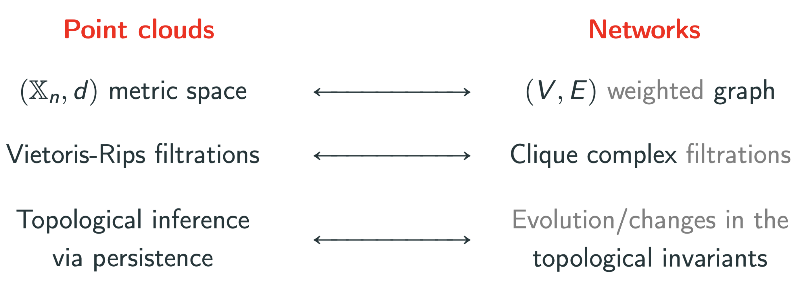

My research work
XIMENA FERNANDEZ
Durham University
UK CENTRE FOR TOPOLOGICAL DATA ANALYSIS
My research work
- PhD in Mathematics (2011-2017)
University of Buenos Aires
Advisor: Gabriel Minian - Research Assistant (2020)
University of Buenos Aires - Postdoctoral Research Assistant (2020-today)
Swansea University & Durham University
UK Centre for Topological Data Analysis
Advisor: Jeffrey Giansiracusa
My research work

My research work
- PhD in Mathematics (2011-2017)
University of Buenos Aires
Project: Combinatorial methods and algorithms in low-dimensional topology & the Andrews-Curtis conjecture.
Main goals:- Develop new combinatorial tools, based on the theory of finite topological spaces, to deal with classic problems in algebraic topology.
- Make progress on the Andrews-Curtis conjecture.
Combinatorial methods and algorithms
in low-dimensional topology
The Andrews-Curtis conjeture
(Geometric) Let $K$ be a CW-complex of dimension 2. If $K\simeq *$ then $K \nearrow \hspace{-1.5pt}\searrow ^3 *$.
(Algebraic) Let $\mathcal P = \langle X ~|~ R \rangle$ be a balanced group presentation of the trivial group. Then $\mathcal P \sim_{Q^{**}} \langle ~ | ~ \rangle.$
Contributions
- Combinatorial approach from the perspective of posets.
- Discrete Morse theory to study simple homotopy types.
- Proved that a subfamily of the potential counterexamples do satisfy the conjecture.
Combinatorial methods and algorithms
in low-dimensional topology


Combinatorial methods and algorithms
in low-dimensional topology

My research work
- Research Assistant (Jan 2020 - Sep 2020) University of Buenos Aires
-
Postdoctoral Research Associate (Oct 2020 - Aug 2021)
Swansea University
Project: Geometric inference & applications in signal analysis
Main goals:- Develop theoretical methods in Riemannian geometry to infer topological properties of a manifold from a noisy sample.
- Apply the topological techniques to problems in the field of signal analysis.
Geometric inference & applications in signal analysis
Let $\mathbb{X}_n$ be a i.i.d. sample of a $d$-manifold $\mathcal M \subseteq \mathbb{R}^D$ with common density $f:\mathcal{M}\to \mathbb{R}_{>0}$.

Deformed Riemannian distance ($q>0$) \[ d_{f,q}(x,y) = \inf_{\gamma} \int_{\gamma}\frac{1}{f(\gamma)^{q}} \]

Fermat distance ($p>1$) \[ d_{\mathbb{X}_n, p}(x,y) = \inf_{\gamma} \sum_{i=0}^{r}|x_{i+1}-x_i|^{p} \]
Thm: $\big(\mathbb{X}_n, C(n,p,d) d_{\mathbb{X}_n,p})\big)\xrightarrow[n\to \infty]{GH}\big(\mathcal{M}, d_{f,q}\big) ~~~ \text{ for } q = (p-1)/d$
Consequences in homological inference
- Convergence of persistence diagrams
- Robustness to outliers
- Less sensitiveness to the embedding
Geometric inference & applications in signal analysis
My research work
-
Postdoctoral Research Assistant (Sep 2021 - today)
Durham University
Project: Topological Methods in Neuroscience
Main goals:- Develop theoretical methods in algebraic topology to study both neuroscientific models and data.
- Apply the topological techniques to problems related to neurodegenerative diseases (Alzheimer and Epilepsy).
Interdisciplinary collaborations:- E. Kropff, S. Benas (Leloir Institute, Argentina)
- D. Mateos (Institute for Applied Math from Litoral, Argentina)
- T. Thompson, C. Alexandersen (Brain Modelling Group, Oxford University, UK)
Topological Methods in Neuroscience

Topological Methods in Neuroscience
Neural connectivity of grid cells

Conjecture: The geometry of the population activity of a module of grid cells determines the neural network connectivity.
We gave a negative answer to the conjecture for modeled grid cells.
Topological Methods in Neuroscience
Geometric biomarkers in epilepsy (in Progress)
- Let $X_1, X_2, \dots X_N:[0,T]\to \mathbb{R}$ a set of signals.
- Given a window size $W$, we compute for every $t\in [W,T]$ the embedding of $X_1, X_2, \dots X_N:[t-W, t]\to \mathbb{R}$ in $\mathbb{R}^N$.
Topological Methods in Neuroscience
Geometric biomarkers in epilepsy (in Progress)
- Let $X_1, X_2, \dots X_N:[0,T]\to \mathbb{R}$ a set of signals.
- Given a window size $W$, we compute for every $t\in [W,T]$ the embedding of $X_1, X_2, \dots X_N:[t-W, t]\to \mathbb{R}$ in $\mathbb{R}^N$.
- We compute the (persistent) homology of the time evolving sliding window embedding.
- Compute derivative of the path of persistence diagrams.
Topological Methods in Neuroscience
Geometric biomarkers in epilepsy (in Progress)
- Let $X_1, X_2, \dots X_N:[0,T]\to \mathbb{R}$ a set of signals.
- Given a window size $W$, we compute for every $t\in [W,T]$ the embedding of $X_1, X_2, \dots X_N:[t-W, t]\to \mathbb{R}$ in $\mathbb{R}^N$.
- We compute the (persistent) homology of the time evolving sliding window embedding.
- Estimate the derivative of the path of persistence diagrams.

My Research work
Connections with network analysis
Thanks!
My Research work
Ongoing projects
-
Persistent fundamental group of point clouds
(with K. Piterman, Malburg University) -
Dimensionality reduction of Riemannian manifolds via quotients
(with L. Zhang, Imperial College of London) -
Dynamics of network oscillatory systems from a topological perspective, with applications in Alzheimer disease
(with C. Alexandersen and T. Thompson, Oxford University) - Open to new applied projects!